Allelescope User Manual
Covers Allelescope 0.1.02 as on the main branch of 22noon/consensus (pull requests #1 to #10), with gene effects, primer sites and read patterns. Revised 18 November 2026. Also available as a web page and a PDF.
Allelescope is a web-based viewer for checking variant calls against the reads behind them. You pick a site, and Allelescope shows the reads that cross it, together with their mates and split-read partners, in an embedded IGV view. You can narrow those reads down by flag, pairing, strand, edit distance, soft clipping or observed allele, pick out individual reads to keep, hide or download, and record a verdict for each variant as you go.
This manual has two audiences:
- People who review variants in a browser that somebody else has set up: start at Opening a browser instance.
- People who set Allelescope up: start at Installing.
All screenshots were taken from a running copy of this version, using small synthetic datasets described in Appendix B. Section 14 lists the few places where this version still behaves differently from what the screen suggests.
Contents
- How Allelescope works
- Installing
- Building a browser instance
- Opening a browser instance
- A tour of the screen
- Looking at a variant
- Reviewing a list of variants
- Genomes with many sequences
- Alleles at a site
- Very deep sites
- Filtering reads
- Selecting, isolating and exporting reads
- Housekeeping: caches, saved lists and presets
- Known issues in this version
- Worked examples
- Troubleshooting
Appendices: A. Reference tables · B. The datasets used in the figures
1. How Allelescope works
Allelescope has three parts: a build command that prepares one sample, a small web server, and the viewer page that runs in your web browser.
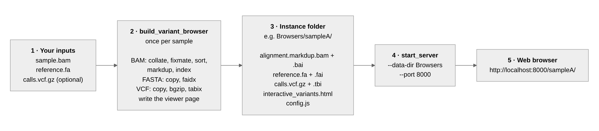
A browser instance is one folder holding the prepared files for one sample. A data directory is a folder that holds one or more instances. One server serves a whole data directory, and each instance gets its own web address.
When you choose a site, the page does not load the whole BAM. It asks the server for the reads at that one site:
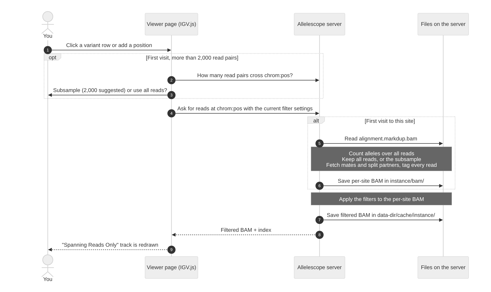
Two consequences are worth knowing:
- The first visit to a site is slower than later visits. The server extracts and tags the reads once and keeps the result. While it works, the allele panel says Preparing reads at ….
- Filtering happens on the server. Each change of filter fetches a new, smaller read set, which is why Allelescope can filter on things a plain IGV session cannot, such as "the mate of a read that crosses this site".
The read track is named Spanning Reads Only, but it holds more than the reads that cross the site. Allelescope also fetches the mate of every crossing read and the other parts of split reads, wherever they map:
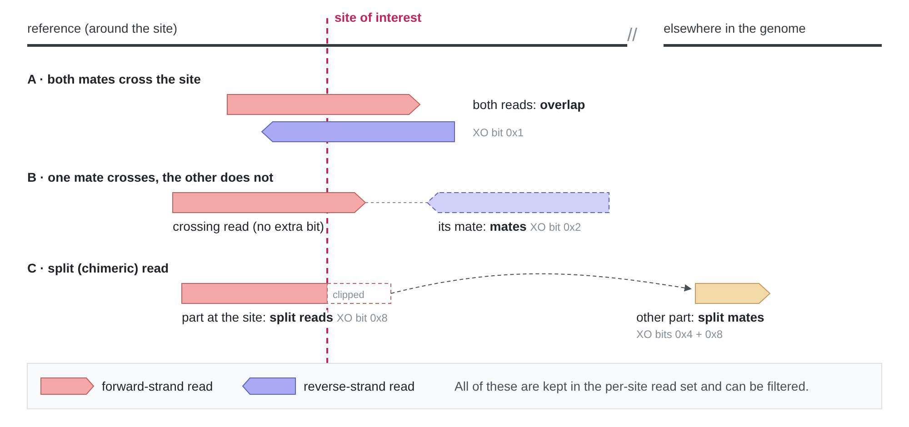
2. Installing
2.1 With pip
Allelescope needs Python 3.12 or later.
pip install allelescope
This installs three commands: build_variant_browser, start_server and generate_viewer (the last is called for you by the build step).
The build step also needs these command-line tools on your PATH:
| Tool | Needed | Used for |
|---|---|---|
samtools |
always | collate, fixmate, sort, markdup, index, faidx |
bgzip |
only with a VCF | compressing a plain-text VCF |
tabix |
only with a VCF | indexing the VCF |
The project was developed with samtools 1.19.2 and htslib 1.19, and this manual was tested with samtools 1.19.2. One way to get them:
conda create -n allelescope -c conda-forge -c bioconda samtools=1.19.2 htslib=1.19
conda activate allelescope
pip install allelescope
2.2 With Docker (Windows, macOS, Linux)
pysam and samtools do not run on Windows, so on Windows use the Docker image, which also works on macOS and Linux. From the repository folder:
docker build -t allelescope .
docker run --rm -p 127.0.0.1:8000:8000 allelescope demo
The second command builds the demo instance and serves it at http://localhost:8000/demo/. To build and serve your own data, mount a folder at /data and use the build and serve commands; docker/README.md in the repository gives the exact commands for PowerShell, Command Prompt and macOS/Linux. Instance folders built with Docker can be served by a normal installation and the other way round.
2.3 Internet access
The computer that displays the viewer needs internet access. The page loads IGV.js, Bootstrap and its icons from cdn.jsdelivr.net. If that site is blocked, the page opens without its layout and without the alignment view.
3. Building a browser instance
3.1 What you need
| Input | Required | Notes |
|---|---|---|
| BAM file | yes | Aligned reads. Keep the MD tags that aligners such as bwa mem write (see the note below). |
| Reference FASTA | yes | The reference the reads were aligned to. It can have any number of sequences: chromosomes, the segments of a segmented virus, or the contigs of an assembly. |
| VCF or VCF.gz | no | Must be sorted. Without it, the viewer starts with an empty variant list and you add positions by hand. |
Note on
MDtags. Allelescope uses theMDtag to tell a reference base from a mismatch. If your BAM has noMDtags, SNP alleles in the allele panel are labelledREFinstead ofSNP(the base shown is still correct). Add the tags first withsamtools calmd -b in.bam reference.fa > out.bam.
3.2 Preparing the VCF (recommended)
Normalising the VCF splits multi-allelic records and left-aligns indels, so that each row in the viewer is one allele:
bcftools norm -f reference.fa -m -any raw_calls.vcf.gz \
| bcftools +fill-tags -- -t all \
| bcftools view -o calls.norm.vcf.gz -O z
bcftools index -t calls.norm.vcf.gz
From the VCF the viewer shows, next to each variant:
- the
DPvalue from theINFOcolumn, as a note; - the allele fraction (AF column), taken from
INFO/AF, or else from the first sample'sAForVAF, or else worked out from itsAD. When the VCF has none of these, the fraction observed in the reads is shown once you open the site.
3.3 Running the build
build_variant_browser -b sample.bam -r reference.fa -v calls.norm.vcf.gz -o Browsers/sampleA
| Option | Default | Meaning |
|---|---|---|
-b, --bam |
required | Input BAM |
-r, --reference |
required | Reference FASTA |
-v, --variants |
none | VCF or VCF.gz, sorted |
-o, --out-dir |
./out_dir |
Instance folder to create |
-g, --genome-name |
first contig in the VCF, otherwise first sequence in the BAM header | Name shown for the reference |
-t, --threads |
10 |
Threads for samtools |
-a, --annotation |
none | Gene annotation, GFF3 or GTF (may be gzipped), for effects on the protein (section 9.4) |
-p, --primers |
none | Amplicon primer scheme, BED, to mark primer sites (section 9.4) |
--bam-processing |
auto |
auto: check the BAM and run only the steps it still needs; full: always run all of step 3; skip: use a coordinate-sorted BAM as it is |
--link |
off | When the BAM needs no processing, hard-link it into the instance instead of copying it (same file system only) |
The command prints each stage as it runs and stops at the first error. It:
- checks that the input files and tools exist;
- works out the genome name;
- runs the BAM through
samtools collate → fixmate → sort → markdupand indexes the result, so that mate information is consistent and duplicates are flagged. With the default--bam-processing autoit first reads the BAM header and skips the steps already done: a BAM that is sorted and duplicate-marked is just copied; - copies the reference and indexes it;
- copies the VCF, compresses it if needed, and indexes it;
- copies the annotation and primer scheme, if given, as
annotation.gff3(or.gtf) andprimers.bed, and warns if their sequence names do not match the reference; - writes the viewer page.
The instance folder then contains:
Browsers/sampleA/
├── alignment.markdup.bam duplicate-marked alignments
├── alignment.markdup.bam.bai
├── reference.fa copy of your reference (keeps its own file name)
├── reference.fa.fai
├── calls.norm.vcf.gz copy of your VCF (only if -v was given)
├── calls.norm.vcf.gz.tbi
├── annotation.gff3 gene annotation (only if -a was given)
├── primers.bed primer scheme (only if -p was given)
├── config.js settings for the viewer page
└── interactive_variants.html the viewer page
Later, the server adds a bam/ folder here for the per-site read sets.
To serve several samples together, build each one into its own folder under the same data directory:
build_variant_browser -b A.bam -r ref.fa -v A.vcf.gz -o Browsers/sampleA
build_variant_browser -b B.bam -r ref.fa -v B.vcf.gz -o Browsers/sampleB
Rebuilding an instance. If you rebuild into a folder that has been used before, delete its
bam/folder and clear the cache (section 13.1) first. Otherwise sites you visited earlier are still served from the old reads.Instances built with an earlier version keep working: the viewer loads its newer parts by itself. Rebuild (or run
generate_vieweragain) only if you want the page itself refreshed.
4. Opening a browser instance
4.1 Start the server
start_server --data-dir Browsers --port 8000
| Option | Default | Meaning |
|---|---|---|
--data-dir, -d |
current folder | Folder that holds the instance folders |
--port |
8000 |
Port to listen on |
--host |
0.0.0.0 |
Network address to listen on |
--debug |
off | Flask debug mode |
Leave the server running while you work. You can add new instance folders without restarting it. The server creates a cache/ folder inside the data directory.
Access. The server has no login, and by default it listens on every network interface. Anyone who can reach the port can read the data and clear the caches. On a shared machine, start it with
--host 127.0.0.1and reach it through an SSH tunnel.
4.2 Open the page
Use the instance folder name followed by a slash:
http://localhost:8000/sampleA/
The address of the page file itself, http://localhost:8000/sampleA/interactive_variants.html, works too. An address can also point at one variant and a set of filters, for example http://localhost:8000/sampleA/#v=chr1:2450; see section 7.6.
Chrome, Edge and Firefox are the browsers the project names as supported.
4.3 If the server is on another machine
Forward the port over SSH from your own computer, then open the address locally:
ssh -L 8000:localhost:8000 user@remote.host
http://localhost:8000/sampleA/
If port 8000 is taken on your computer, change the first number (-L 9000:localhost:8000) and open http://localhost:9000/sampleA/.
4.4 What you see first
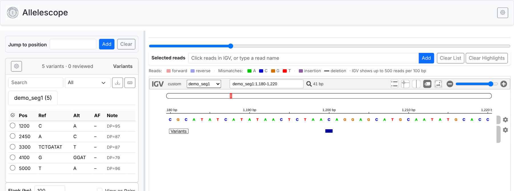
5. A tour of the screen
The left pane is where you choose sites, record your review and set filters. The right pane is the IGV alignment view.
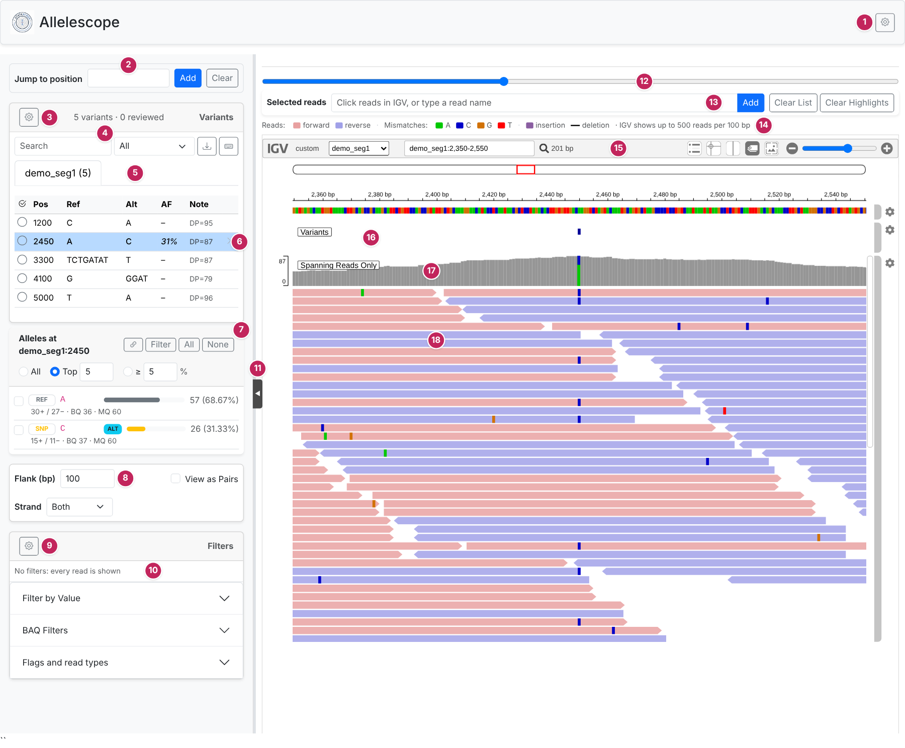
| # | Part | What it is for |
|---|---|---|
| 1 | Header gear | Cached reads and what your browser has saved (section 13) |
| 2 | Jump to position | Add positions that are not in the VCF (section 9.8) |
| 3 | Variants gear | How the list of sequences is shown, empty sequences, saved variant lists |
| 4 | Variant toolbar | Search, status filter, review download, keyboard shortcuts (section 7) |
| 5 | Sequence tabs | One tab per reference sequence, with its number of variants (section 8) |
| 6 | Variant table | Status, position, alleles, AF and your note. Click a row to view that site |
| 7 | Alleles at … panel | The alleles at the selected site, with strand and quality, and the allele filter (section 9) |
| 8 | View options | Flank, View as Pairs, Strand |
| 9 | Filters | Gear for reset, download and presets (section 11) |
| 10 | Filters in use | The filters currently switched on; the Filters header shows how many |
| 11 | Pane handle | Drag the divider to resize the left pane; click the arrow to hide or show it |
| 12 | Height slider | Height of the read track |
| 13 | Selected reads | Reads you have picked, and what to do with them (section 12) |
| 14 | Colour key | What the read colours mean |
| 15 | IGV toolbar | Sequence selector, position box, zoom |
| 16 | Variants track | The VCF records. Clicking one selects its row in the table |
| 17 | Coverage | Depth of the reads currently shown, with allele colours at mismatching positions |
| 18 | Reads | Coloured by strand: pink reads are on the forward strand, blue-violet reads on the reverse strand |
Inside the read track, IGV's usual conventions apply, as the colour key above the view says. A coloured tick on a read is a base that differs from the reference (green A, blue C, orange G, red T). A black line through a read is a deletion, and a small purple mark is an insertion. Drag to pan, and use the + and − buttons or the zoom slider to zoom. IGV draws at most 500 reads per 100 bases; its coverage bar counts all of them.
Pointing at most controls shows a short explanation.
To give the alignment view more room, drag the divider or click the arrow on it:
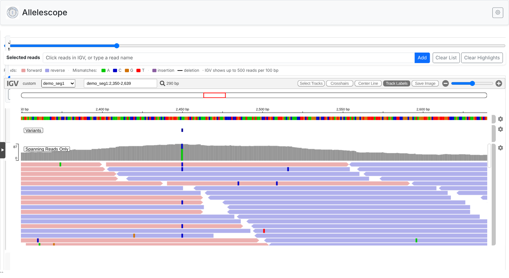
6. Looking at a variant
6.1 Choose a variant
- Click the tab for the reference sequence. The number in brackets is how many variants it has.
- Click a row in the table. The row turns blue, the alignment view moves to that site and loads its reads, and an Alleles at … panel for the site appears below the list (section 9).
The first click on a site takes a moment while the server prepares its reads.
You can also click a variant in the Variants track of the alignment view. It selects the matching row, exactly as if you had clicked it in the table. Clicking the variant that is already selected opens IGV's details box for the VCF record instead.
With the keyboard, J and K (or the down and up arrows) move to the next and previous variant (section 7.3).
Sequences with no variants are hidden by default. To see them, open the Variants gear and switch on Show empty chromosomes:
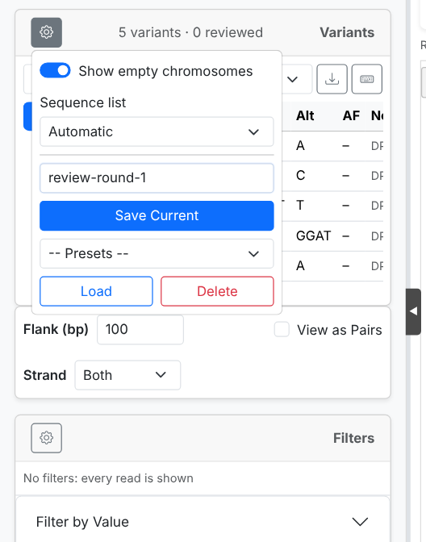
6.2 Set how much sequence is shown
Flank (bp) sets how many bases are shown on each side of the site. The default is 100, and the intended range is 10 to 1000. A new value takes effect the next time you click a row, so click the current row again to apply it.
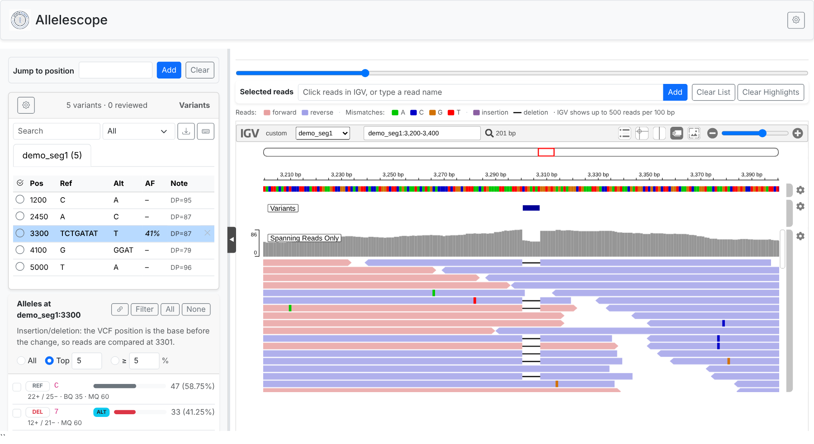
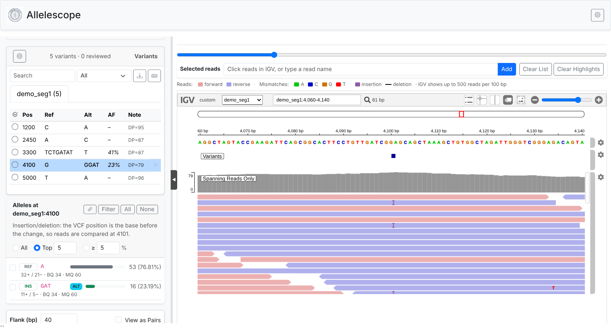
6.3 Look at pairs
Tick View as Pairs to draw each read together with its mate, joined by a line.
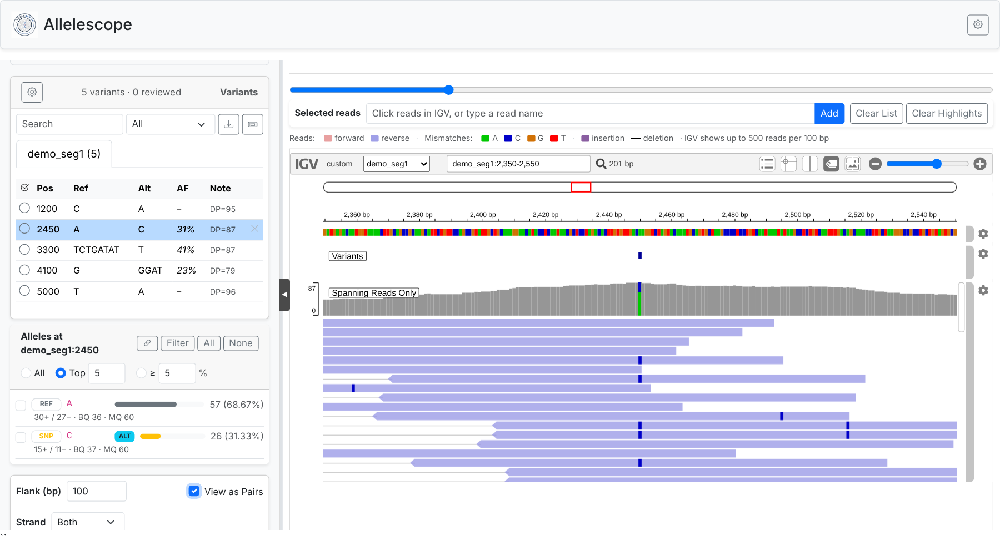
6.4 Read the details of one read
Click a read to open IGV's details box. Besides the standard fields, it lists the tags Allelescope adds, which are what the filters work on:
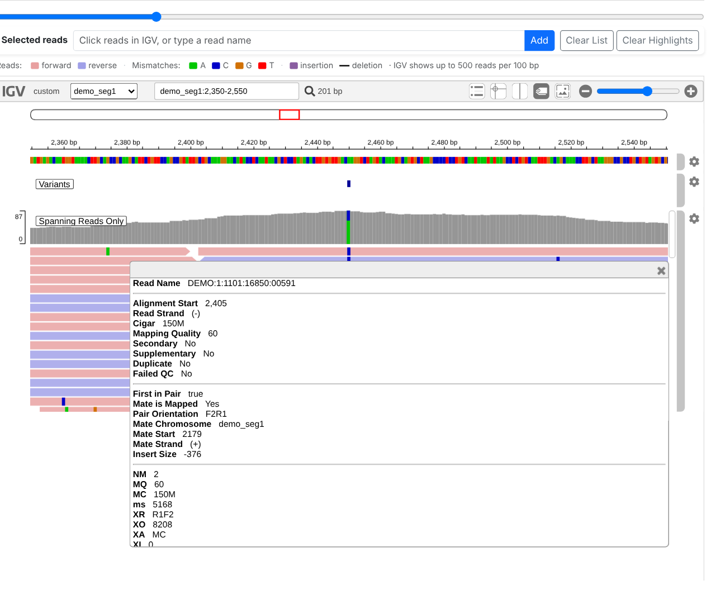
XR (pair orientation) is R1F2, XO is 8208 and XA (the allele this read shows at the site) is MC, a mismatch to C. Scroll inside the box for the remaining tags.The tags are explained in Appendix A.
6.5 The variant table
| Column | Shows |
|---|---|
| Status icon | Your review status: an empty circle (not reviewed), Confirmed, Doubtful or Artefact (section 7) |
| Pos, Ref, Alt | The VCF record. Long alleles are shortened; point at one to see it in full |
| Effect | Only with a gene annotation or primer scheme: the effect on the protein, for example polA S328Y, and primer if the variant lies in a primer (section 9.4) |
| AF | The allele fraction from the VCF. If the VCF has none, the fraction seen in the reads appears in italics once you have opened the site. Point at a VCF value to see the fraction in the reads |
| Flag | Read-evidence warnings once the site has been opened: a green tick, or ⚠ and their number (section 9.3) |
| Note | Your note, or the VCF INFO summary (for example DP=87) until you write one. Point at the cell to see the VCF INFO |
| × | Removes the row. It appears when you point at the row |
- Click Pos, AF, the flag or the status icon in the header to sort the table; click again to reverse the order.
- Removing a row asks no question; a message in the bottom-right corner offers Undo. Your browser remembers the removal (section 13.2).
7. Reviewing a list of variants
7.1 Statuses and notes
Every variant can carry a status, Confirmed, Doubtful or Artefact, and a note. Click the circle at the start of a row to choose a status:
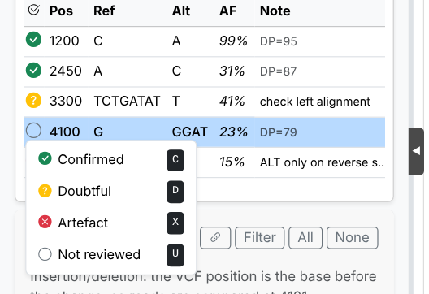
To write a note, double-click the Note cell of a row (or press E for the selected row), type, and press Enter. Esc cancels. A note replaces the VCF INFO summary in the cell; the summary is still shown when you point at the cell.
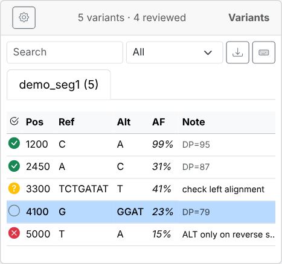
Statuses and notes are kept in your web browser, separately for each instance, and survive reloading the page. They are not shared with other people or other browsers; to pass them on, download the review (section 7.5).
7.2 Find and filter variants
The toolbar above the sequence tabs helps with long lists:
- Search finds positions, alleles and notes (press / to jump to it).
- The list next to it shows only variants with one status, for example Not reviewed:
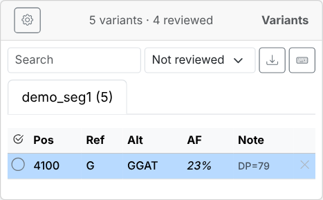
7.3 The keyboard
Going through a list is fastest with the keyboard. Press ? (or the keyboard button in the toolbar) for this list:
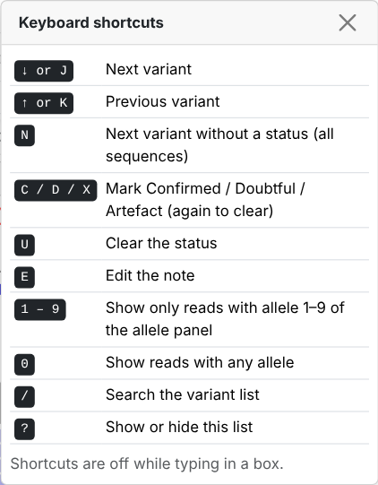
| Key | Does |
|---|---|
| ↓ or J, ↑ or K | Next / previous variant on the current sequence |
| N | Next variant without a status, moving on to the next sequence when needed |
| C, D, X | Mark Confirmed, Doubtful, Artefact; press again to clear |
| U | Clear the status |
| E | Edit the note |
| 1 – 9 | Show only the reads with that allele of the allele panel (section 9.7) |
| 0 | Show reads with any allele |
| / | Search the variant list |
| ? | Show or hide the list of shortcuts |
Shortcuts are off while you type in a box.
7.4 A review routine
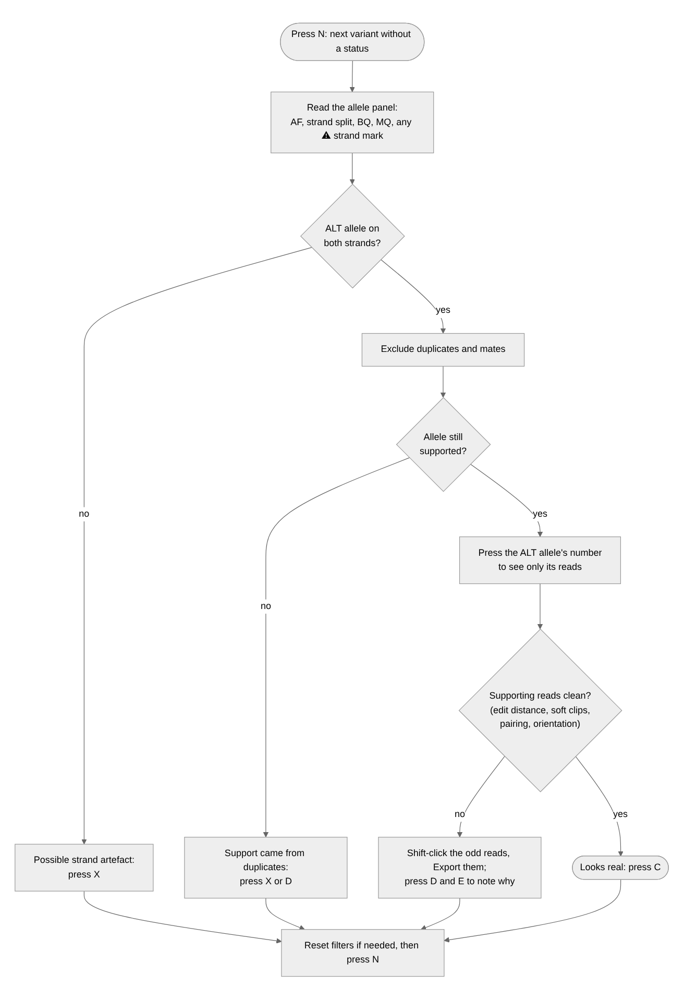
7.5 Download the review
The download button in the toolbar offers two files:
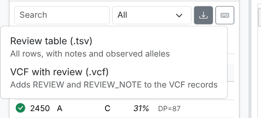
- Review table (.tsv): one line per variant with sequence, position, REF, ALT, VCF
INFO, AF (and whether it came from the VCF or the reads), status, note and, for the sites opened in this session, the alleles seen with their counts and strand split. It opens in any spreadsheet program. - VCF with review (.vcf): the instance's VCF with two
INFOfields added to the reviewed records:REVIEW(confirmed,doubtfulorartefact) andREVIEW_NOTE. Characters a VCF cannot hold in a note are percent-encoded:%20for a space,%3Bfor;,%2Cfor,. Positions you added by hand are not in the VCF; they are in the .tsv.
7.6 Sharing a view
The address in the browser's address bar records what you are looking at: the variant, the filters, the allele filter and the subsample size. For example
http://localhost:8000/demo/#v=demo_seg1:5000&on=retain-duplicates&xa=MA
shows demo_seg1:5000 with duplicates excluded and only the reads carrying an A. Send the address to a colleague on the same server, or use the link button in the allele panel to copy it, and they see the same view. A position that is not in their variant list is added to it.
The browser's Back and Forward buttons move between the variants you have opened.
8. Genomes with many sequences
Segmented viruses (influenza has eight segments), multi-chromosome genomes and assemblies with many contigs give the variant list one tab per sequence. With more than a few, the tabs do not fit across the pane:
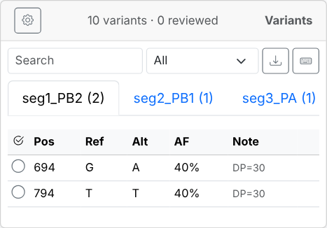
8.1 Tabs down the side
When the tabs do not fit in one row, Allelescope puts them in a column beside the variant table. Each tab shows the sequence name and its number of variants:
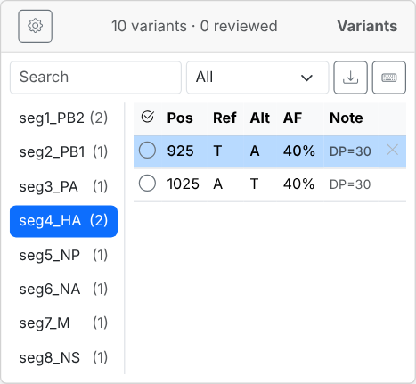
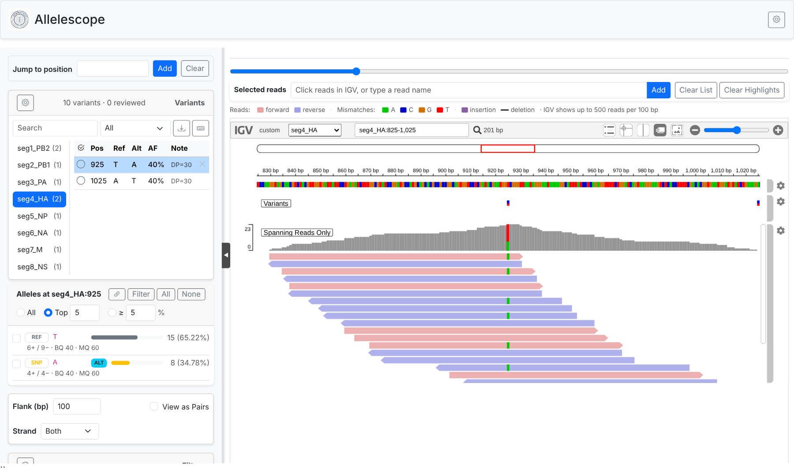
Long names are shortened; point at a tab to see the full name. The column scrolls when there are more sequences than fit.
8.2 Many contigs
From nine sequences on, a Find sequence box appears above the column. Type part of a name to list only the sequences that match:
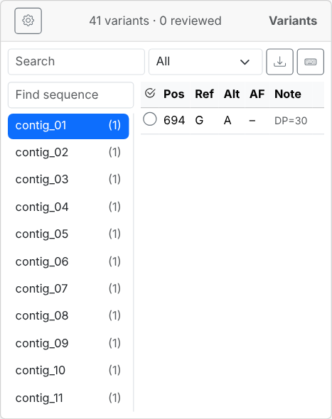
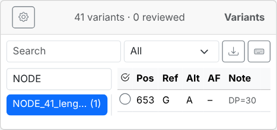
NODE finds the one contig with a long assembler name, shortened in the tab.8.3 A drop-down list
If you would rather keep the full width for the table, choose a drop-down list instead:
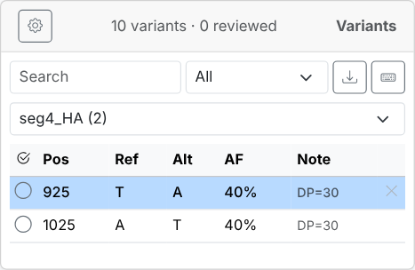
8.4 Choosing the layout
The layout is set under Sequence list in the Variants gear:
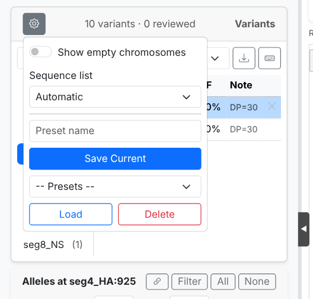
| Setting | Behaviour |
|---|---|
| Automatic (default) | Tabs across the top while they all fit in one row, otherwise tabs down the side. Checked again when you resize the pane. |
| Tabs across the top | One row, scrolling sideways when needed |
| Tabs down the side | A column beside the table, with Find sequence from nine sequences |
| Drop-down list | A single list above the table |
Your browser remembers the choice. Show empty chromosomes works with every layout.
Other things that help with many sequences:
- N goes to the next variant without a status across all sequences, switching tabs for you (section 7.3).
- Search in the variant toolbar filters the tables of every sequence; switch tabs to see the matches on other sequences.
- Clicking a tab only switches the table; the alignment view moves when you click a variant.
9. Alleles at a site
9.1 The allele panel
Whenever you select a variant or add a position, the Alleles at … panel below the variant list shows every allele the reads carry at that site (item 7 in Figure 5).
| Part | Meaning |
|---|---|
| Tick box | Choose the allele for filtering |
| Type | REF reference base, SNP mismatch, DEL deletion, INS insertion, ? anything else |
| Allele | The base for REF and SNP, the length for DEL, the inserted bases for INS |
ALT badge |
Marks the allele that matches the ALT of the VCF record. Positions added by hand have no VCF record, so no badge |
| Bar and numbers | Number of read pairs showing the allele, and their share |
| Second line | Reads on the forward and reverse strand, mean base quality at the site (BQ) and mean mapping quality (MQ) |
Counts are per read pair, not per read: when both mates cross the position, the pair is counted once, using the read that crosses the site.
The row above the list controls which alleles are listed: All, the Top N by count (the default is the top 5), or those at or above a percentage. Alleles hidden this way are also unticked.
9.2 Strand and quality
The second line of each allele shows whether the allele is supported on both strands and by good-quality bases:
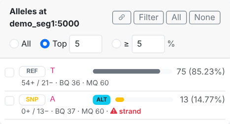
demo_seg1:5000 the ALT allele A is seen on 0 forward and 13 reverse reads, while the reference T is on 54 forward and 21 reverse reads. The ALT allele is marked ⚠ strand.15+ / 11−: reads on the forward and reverse strand.BQ 36: mean base quality of the allele's base at the site. It is left out for deletions, which have no base there.MQ 60: mean mapping quality of the reads.- ⚠ strand: the allele is mostly on one strand while the other reads at the site are not. Allelescope marks it when Fisher's exact test comparing the allele's strand split with that of the other reads gives p < 0.01 and at most 15 % of the allele's reads are on one strand. This is a common sign of an artefact. Point at the mark for the p-value.
9.3 Read evidence
Below the allele list, Read evidence compares the reads behind the main alleles at the site (up to four). Each row is a property of the reads; each column is an allele. It opens by itself when something looks wrong.
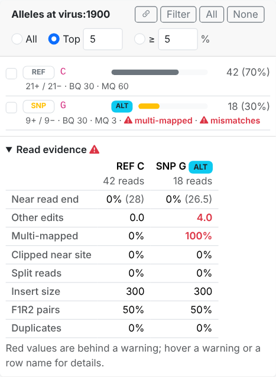
| Row | Meaning |
|---|---|
| Near read end | Share of reads in which the site is less than 10 bases from either end of the aligned part of the read; the median distance in brackets |
| Other edits | Mean edit distance (NM tag) of the reads, not counting the allele itself. Empty when the BAM has no NM tags |
| Multi-mapped | Reads with mapping quality 0, secondary alignments, or alternative hits (bwa's XA tag, or an XS score as good as AS) |
| Clipped near site | Reads with a soft clip of at least 5 bases whose edge is within 10 bases of the site |
| Split reads | Supplementary alignments and reads with an SA tag |
| Insert size | Median insert size of read pairs whose mates map to the same sequence |
| F1R2 pairs | Share of read pairs in F1R2 orientation (read 1 forward or read 2 reverse); the rest are F2R1 |
| Duplicates | Reads marked as duplicates. Only meaningful if the BAM keeps duplicates and marks them |
Like the allele counts, these use one read per read pair and every read at the site, even when a deep site is subsampled for display (section 10).
Warnings. Each allele other than the reference is compared with a baseline: the reference allele if it has at least 5 reads, otherwise the most common other allele. A warning appears after the allele's strand and quality line, and as red values in the table. Point at a warning to read what it means.
| Warning | Shown when the allele… | Often means |
|---|---|---|
| ⚠ strand | is on one strand for at least 85 % of its reads, unlike the baseline (see 9.2) | Sequencing or alignment artefact |
| ⚠ orientation | is in one pair orientation (F1R2 or F2R1) for at least 85 % of its read pairs, unlike the baseline | DNA damage during library preparation, such as oxidation (G>T) or deamination (C>T) |
| ⚠ read end | is within 10 bases of a read end in at least 40 % of its reads, and at least twice as often as the baseline | Alignment errors at read ends, adapters, primer sequence |
| ⚠ mismatches | has at least 1.5 more other edits per read than the baseline | Reads from a related sequence (paralogue, another strain) or a contaminant |
| ⚠ multi-mapped | has at least 30 % ambiguous reads, at least twice the baseline | A repeat, or a sequence present more than once |
| ⚠ clipped | has at least 30 % of reads clipped near the site, at least twice the baseline | Misalignment, or a larger rearrangement nearby |
| ⚠ split reads | has at least 30 % split reads, at least twice the baseline | A rearrangement or structural variant |
| ⚠ duplicates | has at least 60 % duplicates, at least 1.5 times the baseline | Support from few original molecules (PCR jackpot) |
| ⚠ insert size | has a median insert size at least 50 bp and 25 % away from the baseline's | Reads from another template, or an indel nearby |
| ⚠ low BQ | has a mean base quality at least 10 below the baseline and at most 25 | Sequencing errors |
Every warning needs at least 5 reads with the allele. Warnings that compare counts (strand, orientation, read end, multi-mapped, clipped, split reads, duplicates) also need Fisher's exact test to give p < 0.01. Together with the minimum effect, this keeps very deep sites from being flagged for tiny differences.
The variant table gets one more warning, ⚠ AF ≠ VCF, when the VCF's AF and the share of reads carrying the ALT allele differ by at least 15 percentage points. The caller may have dropped low-quality or duplicate reads, or realigned them, so it is a reason to look rather than proof of an error.
The warnings are hints, not verdicts: a real variant near the end of an amplicon can be flagged read end, and a sample made only of duplicates flags nothing. Use them to decide which variants to look at closely.
In the variant table. The flag column shows, for each site opened in this session, a green tick when there are no warnings or ⚠ and the number of warnings. Point at it for the list, or click its header to sort the most-flagged variants to the bottom (click again for the top).
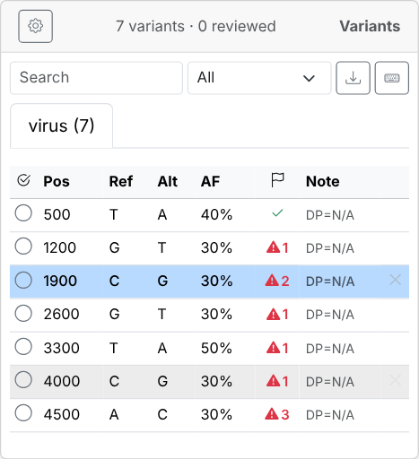
The warnings are also in both downloads (section 7.5): the read_flags column of the review table, and INFO/READ_FLAGS in the VCF, for example READ_FLAGS=ambiguous,mismatches.
9.4 Gene effects and primers
Give the build a gene annotation (-a) and, for amplicon sequencing, the primer scheme (-p), and Allelescope shows what each variant does to the protein and marks variants and reads in primer sites. You can also add the files to an existing instance: copy them into its folder as annotation.gff3 (or annotation.gtf) and primers.bed, then reload the page. No rebuild and no restart is needed.
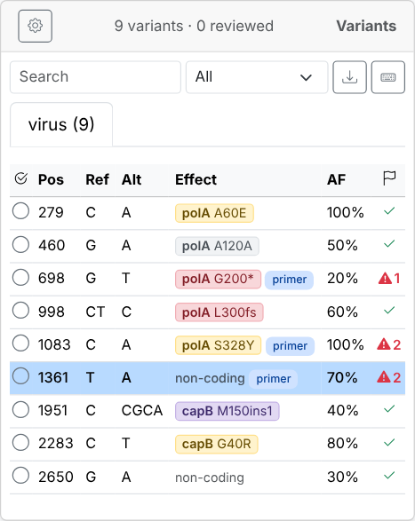
polA on +, capB on −) and a tiled amplicon scheme. Each variant shows its effect, coloured by kind, and primer where it lies in a primer.Effects. For a variant in a coding sequence (CDS features), Allelescope translates the codons before and after the change, on whichever strand the gene is on:
| Kind | Example | Colour |
|---|---|---|
| missense | polA S328Y |
yellow |
| synonymous | polA A120A |
grey |
| stop gained, stop lost, start lost | polA G200* |
red |
| frameshift | polA L300fs (at codon 300) |
red |
| in-frame insertion or deletion | capB M150ins1 (one codon inserted after codon 150), …del2 |
purple |
| non-coding | the variant is in no CDS of the annotation | plain text |
Codons are numbered from the start of the CDS (amino acid 1 is the start codon). A CDS written as several lines with the same ID is joined in order, which covers spliced genes and ribosomal slippage. For example, coronavirus ORF1ab is written as two parts that overlap by one base; a variant on that base changes a codon in each frame and shows both changes. When two CDSs have the same gene name (ORF1a and ORF1ab, say), the product is added to tell them apart. A CDS with a transl_table attribute is translated with that genetic code (1, 2, 3, 4, 5 and 11 are known).
In the allele panel, every allele at the site, not only the ALT of the VCF, shows its effect under its strand line. This also works for positions added by hand, and it shows what minority variants do.
Point at an effect for the full text. Type a gene name, a change (S328Y) or a kind (missense, frameshift) in the search box above the table to list only those variants.
The annotation must use the reference's sequence names. If none match (for example MN908947.3 in the reference and NC_045512.2 in the GFF), the build warns and the page shows the warning when it opens.
Primers. The primer scheme is a BED file with a line per primer: sequence, start, end, name, and optionally pool and strand (+ for left primers, - for right). Without a strand column, names containing LEFT or RIGHT are used. ARTIC-style .primer.bed files work as they are.
In amplicon data, the first bases of a read that starts at a left primer, and the last bases of a read that ends at a right primer, are copies of the primer oligo, not of the sample. Unless your pipeline trimmed the primers, those bases always show the reference (or whatever the primer says). Allelescope counts, for each allele, how many of its reads have primer sequence at the site. A read counts if its aligned part starts in a left primer covering the site, or ends in a right primer covering it. Reads with trimmed primers do not count, because their alignment starts after the primer.
When the site lies in a primer, the allele panel says so and gives the share of reads with primer sequence, and the read-evidence table gets a Primer sequence row. Two warnings can appear:
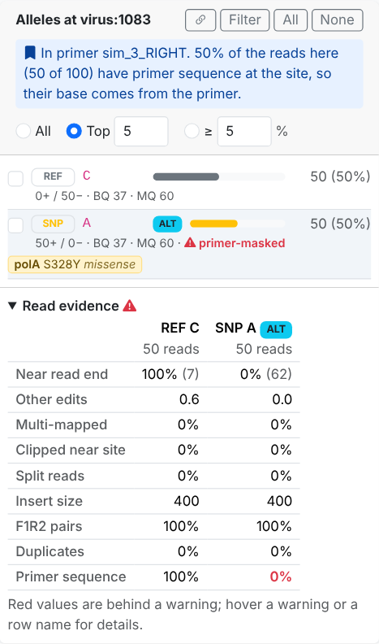
virus:1083 every reference read is from amplicon 3, ending in its right primer, and every ALT read is from amplicon 4, which crosses the primer region with real sequence. The variant is in every sample molecule, but only half the reads show it.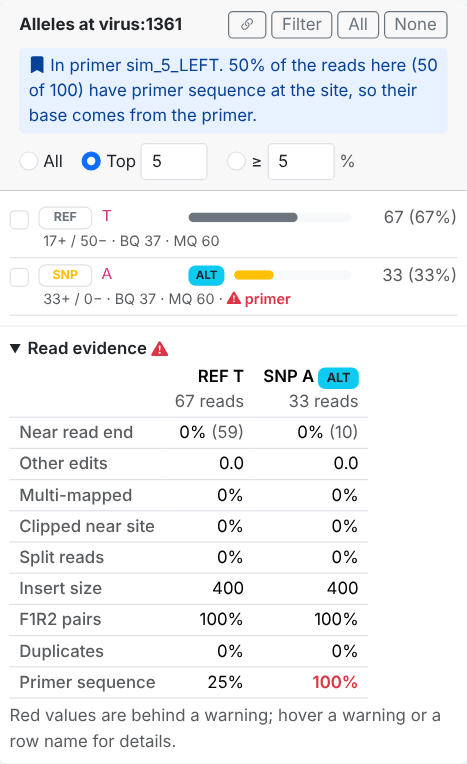
virus:1361 the ALT allele is seen only in reads that start in the left primer of amplicon 5, which carries a different base. Reads from amplicon 4 crossing the same position show the reference.| Warning | Shown when | Means |
|---|---|---|
| ⚠ primer | at least half of the allele's reads have primer sequence at the site, and at least twice the share of the baseline's (Fisher p < 0.01) | The allele may come from the primers, not the sample |
| ⚠ primer-masked | at least half of the baseline's reads have primer sequence at the site, and at most half that share of the allele's | Primer reads hide the allele: its true share is higher. The warning gives its share among reads without primer sequence |
At a primer site the reads of different alleles often come from different amplicons, one ending in its primer and the next crossing it. They then differ in strand and pair orientation by design, so when at least 20 % of the allele's or the baseline's reads have primer sequence there, the strand and orientation warnings are left out.
In the downloads, the review table has effect and primers columns, and the VCF gets INFO/EFFECT (for example EFFECT=polA:S328Y:missense, one entry per ALT and gene) and INFO/PRIMER. Unlike the read warnings, these are filled in for every variant, opened or not.
9.5 Read patterns
The allele panel shows what the reads have at the selected site. Read patterns, below it, shows what else the same read pairs have nearby, and which combinations occur. It does not try to call haplotypes. It lists the combinations that are in the reads, how often, and with what read evidence, so that real linked variants can be told from artefacts.
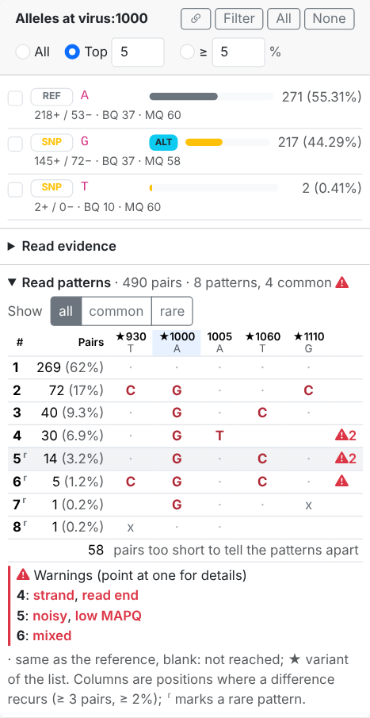
virus:1000) where the ALT G is carried by two real lineages (patterns 2 and 3), an artefact (4), a contaminant (5) and PCR chimeras of the two lineages (6). The allele counts alone show only "G in 44 % of the reads".How it works. For every read pair crossing the site, Allelescope lists its differences from the reference within reach of the pair: mismatches with base quality 20 or more, insertions and deletions. It then keeps the positions where a difference recurs (in at least 3 pairs and 2 % of the pairs covering the position), plus every variant of the variant list near the site (marked ★), and the site itself. Each pair's state at those positions is its pattern. Rare one-off differences, mostly sequencing errors, are left out of the patterns but counted as other differences per pair.
| In the table | Meaning |
|---|---|
| Columns | Positions where a difference recurs, with the reference base. The selected site is shaded. Point at a column for the counts and, with an annotation, the effect of each difference |
A base, del2, +AT |
The pair has this mismatch, deletion or insertion there |
· |
Same as the reference |
| blank | The pair does not reach the position (or its mates disagree there, or the base quality is low) |
x |
Another, rarer difference |
# |
Patterns by size; r marks a rare one |
| pairs too short to tell the patterns apart | Pairs that reach only positions where several patterns agree. They are counted, not assigned |
A pair that does not reach every position joins the one pattern it agrees with. Pairs whose reads carry four or more other differences each are kept apart as noisy patterns, because scattered mismatches are typical of a contaminant, a related sequence or damaged DNA.
Warnings. Each pattern with differences is compared with all the other pairs at the site:
| Warning | Shown when the pattern… | Often means |
|---|---|---|
| ⚠ strand | has at least 85 % of the reads showing its differences on one strand, unlike the others (Fisher p < 0.01) | Sequencing or alignment artefact |
| ⚠ read end | has its differences within 10 bp of a read end in at least 40 % of those reads, twice as often as the others (Fisher p < 0.01) | Alignment errors at read ends, adapters |
| ⚠ noisy | is made of pairs with four or more other differences per read | Contaminant, related sequence, damaged DNA |
| ⚠ mixed | is rare, and matches one common pattern on the left and another on the right | PCR chimera (or a real recombinant) |
| ⚠ low MAPQ | has a mean mapping quality at most 40 and at least 15 below the other pairs | Reads from a repeat or another sequence |
| ⚠ duplicates | has at least 60 % duplicate pairs | Few original molecules |
| ⚠ one amplicon | comes entirely from one amplicon while the other pairs come from several (needs a primer scheme, section 9.4) | Error early in that amplicon's PCR, or a primer artefact |
In Figure 31, pattern 4 is the artefact: all its reads are on the reverse strand with the differences at the read end. Pattern 5 is the contaminant: 5.7 other differences per read, mapping quality 25. Pattern 6 combines pattern 2's left side with pattern 3's right side.
Common and rare patterns. A pattern is common when at least 5 % of the pairs carry it, and at least 5 pairs. Show above the table filters the reads in IGV:
- all: every pair.
- common: only pairs in common patterns. Rare combinations, mostly errors, artefacts and chimeras, are hidden. This is a noise filter at the level of whole pairs.
- rare: only pairs in rare patterns, to look at what the common view hides.
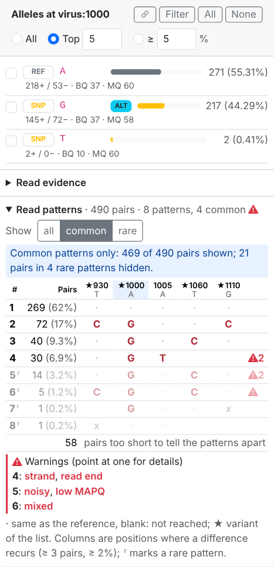
A rare pattern is not necessarily an artefact: a real minority variant below 5 % is rare too. Patterns that contain a variant of your list are always shown as columns, so you can see whether such a variant only comes in a rare pattern.
Showing one pattern. Click a row to show only that pattern's reads in IGV, and click it again to show all. The … row stands for all the patterns not listed. The selection is part of the view address (Appendix A.3), so a link shows the same reads.
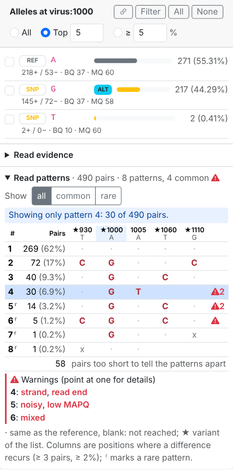
The pattern filter works together with the other filters. For example, tick the ALT allele and choose rare to see the rare patterns among the reads carrying the ALT. Pattern frequencies are always worked out on all the reads at the site, so they do not change when you change the other filters.
Settings. The Read patterns section of the Filters panel holds the same choice of all, common or rare patterns, and the thresholds:
| Setting | Default | Meaning |
|---|---|---|
| Common from (% of pairs), and (pairs) | 5 %, 5 | When a pattern counts as common |
| Position counts from (pairs), and (% of pairs there) | 3, 2 % | When a recurring difference becomes a column |
| Base quality from | 20 | Mismatches of lower quality count as unknown |
They are saved with the other filters, in presets and in the view address. Patterns are computed once per site and setting, and then cached. At a subsampled deep site they take a fraction of a second; for all reads of a site 200,000 pairs deep, about 8 seconds.
9.6 Insertions and deletions
A VCF gives the base before an insertion or deletion as its position. At that base every read still shows the reference, so it says nothing about the indel. For indel records Allelescope therefore compares the reads one base further on: the first deleted base, or the base that follows the insertion point. The panel says which position it used (Figure 8), and the view stays centred on the VCF position.
9.7 Filter by allele
The quickest way: click an allele in the panel (anywhere except its tick box), or press its number on the keyboard. The track then shows only read pairs carrying that allele. Click it again, or press 0, to show all reads.
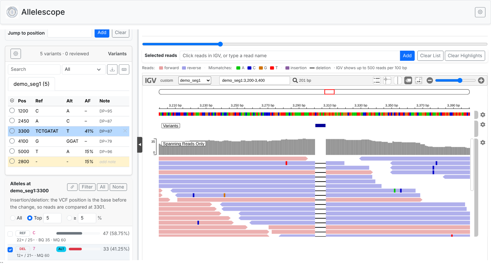
DEL 7: every read crossing the site carries the deletion.To keep several alleles at once:
- Tick the alleles you want to see. All and None tick or untick every listed allele.
- Click Filter.
Mates are kept with their reads. The allele filter works together with the other filters and is listed with them, for example require allele DEL 7.
It belongs to the site where you set it, because an allele name such as DEL 7 only means something there. When you select another site the allele filter is cleared, and a short message tells you so.
To clear it yourself, do any one of these:
- click the allele again, or press 0;
- click the × on its badge in the list of filters in use;
- use Reset filters or Clear All;
- click Filter with no allele ticked.
9.8 Add a position that is not in the VCF
- Select the tab for the right reference sequence.
- Type one or more 1-based positions in Jump to position, separated by spaces, commas or semicolons.
- Click Add or press Enter.
Each position is added to the table as a yellow row, the view moves to it, and the allele panel shows what the reads carry there:
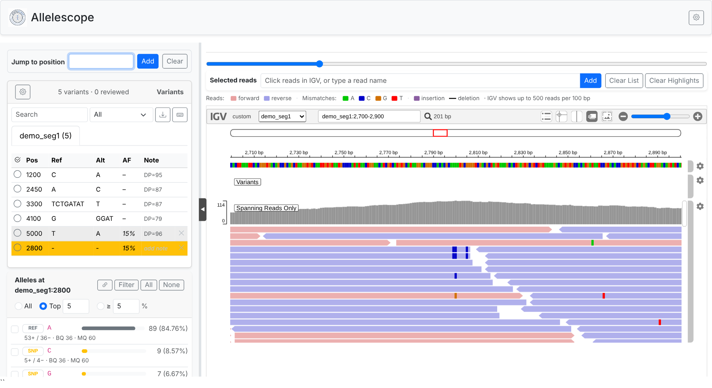
The allele filter works the same way at these positions:
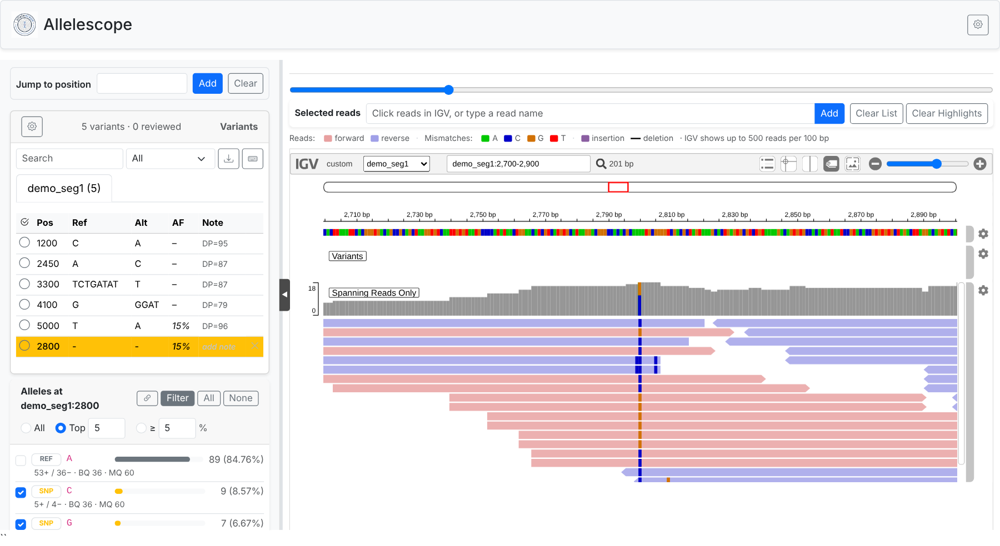
Clear removes all manual rows from the current tab.
Things to know:
- A position that is already in the list is refused with a message. If you typed several positions, the ones after the refused one are not added; enter them again.
- Your browser remembers manual rows, and they appear in every instance on the same server (section 13.2).
- Nothing is written back to the VCF.
10. Very deep sites
At very high depth, for example a viral sample at 100,000x or more, showing every read is slow to prepare and impossible to read. Before Allelescope prepares a site for the first time, it counts the read pairs that cross it. If there are more than 2,000, it asks what to show:
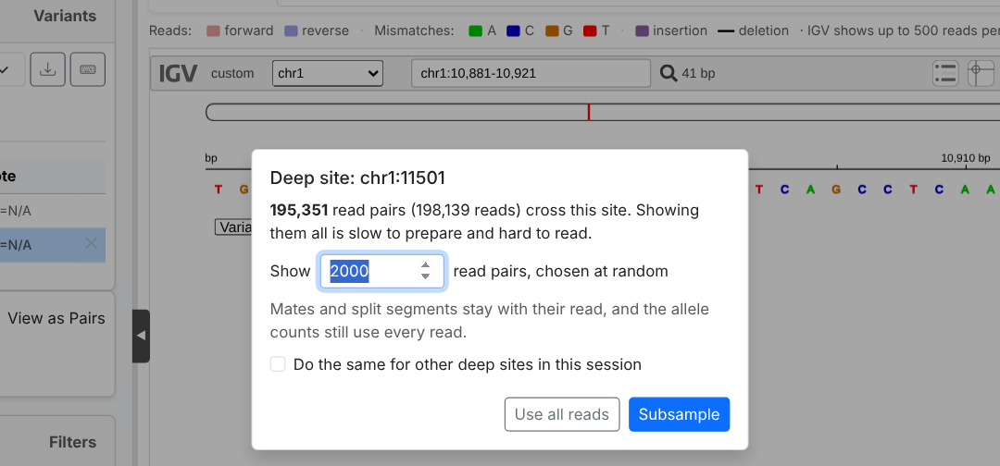
- Subsample shows the number of read pairs in the box. 2,000 is suggested; type another number if you like. The pairs are chosen at random, but the choice is fixed: a read always comes with its mate and split segments, and the same reads are shown every time the site is opened.
- Use all reads shows every read pair. At this depth that takes noticeably longer to prepare and to draw.
Tick Do the same for other deep sites in this session to stop being asked until the page is reloaded.
The allele counts always use every read, whichever you choose. The allele panel says when a site is subsampled:
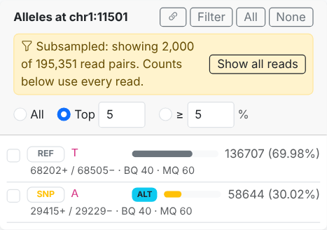
- Show all reads switches the site to the full read set. A deep site shown in full has a Subsample to 2,000 button instead.
- Your browser remembers the choice for each site of each instance, and the address records it (section 7.6).
- Filters, Show only these / Hide these and Export work on the reads being shown.
- The subsampled and full versions of a site are kept separately on the server, so switching back to one you have already opened is quick.
As a guide, on the test sample in Appendix B (198,000 reads at the site) preparing a 2,000-pair subsample took about 4 seconds and preparing all reads about 16 seconds.
11. Filtering reads
11.1 How filters combine
Every filter must be satisfied for a read to be shown:
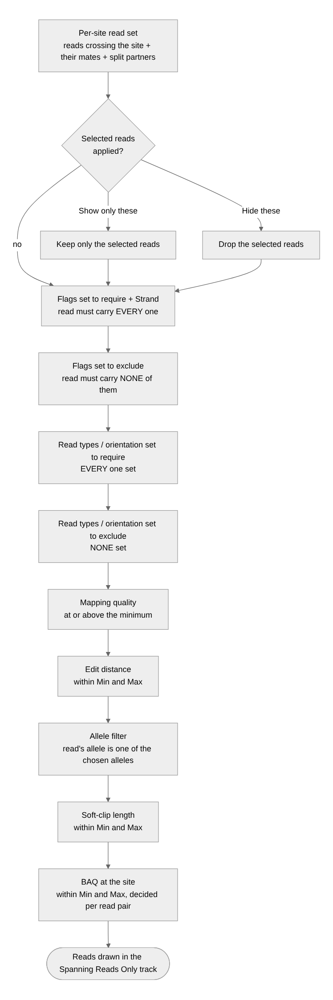
A change takes effect immediately: the track reloads with the new read set. Filters stay on as you move between sites. Two things are tied to one site and are reset when you select another: the allele filter (section 9.7) and Show only these / Hide these for selected reads (section 12.2).
Filters return to their defaults when the page is reloaded, so save combinations you use often as presets (section 11.7), or keep the address of the view (section 7.6).
11.2 The three sections
Open a section by clicking its title. Only one is open at a time.
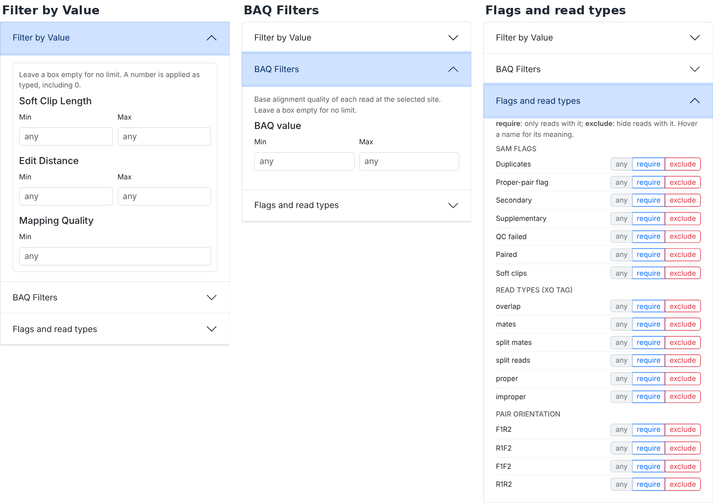
11.3 Strand
The Strand selector in the view options limits the reads to one strand. Plus (+) shows forward-strand reads and Minus (-) shows reverse-strand reads.
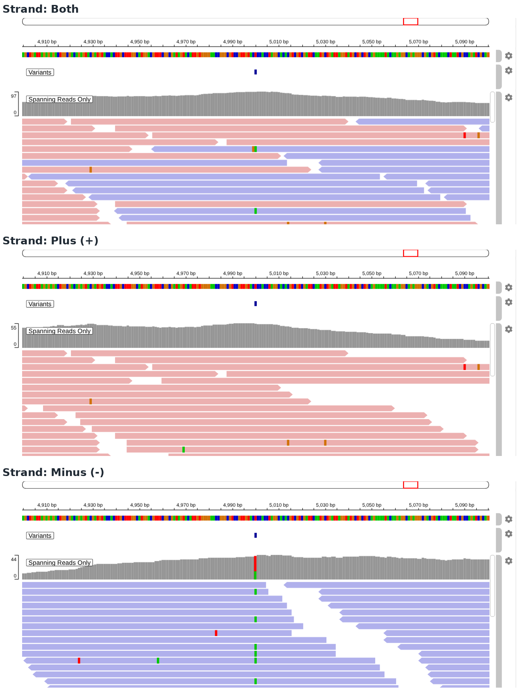
11.4 Numeric limits
Filter by Value and BAQ Filters hold numeric limits. Every box is empty to start with, and an empty box means no limit, so nothing is filtered until you type a number. A number is applied as typed, including 0: a maximum edit distance of 0 keeps only reads that match the reference exactly.
| Box | Keeps reads with |
|---|---|
| Soft Clip Length Min / Max | at least / at most this many soft-clipped bases (both ends added together) |
| Edit Distance Min / Max | an edit distance (NM) of at least / at most this value |
| Mapping Quality Min | a mapping quality of at least this value |
| BAQ value Min / Max | a base alignment quality at the selected site of at least / at most this value |
About BAQ:
- Base alignment quality is the base quality lowered where the alignment around the base is uncertain. Allelescope reads it from the
BQtag that samtools adds when a site is prepared. - The limit looks at the reads that cover the site. A read pair is kept or removed as a whole, so a mate that does not reach the site follows the read that does.
- For a read with a deletion at the site, the median over its neighbouring bases is used.
11.5 Flags and read types
Each property in Flags and read types has three settings:
- any: no filter (the default);
- require: only reads with the property are shown;
- exclude: reads with the property are hidden.
Point at a property's name to see what it means.
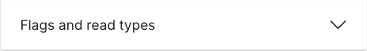
SAM flags come from the BAM:
| Property | Reads it refers to |
|---|---|
| Duplicates | Flagged as duplicates by the build step |
| Proper-pair flag | Flagged as properly paired by the aligner |
| Secondary | Secondary alignments |
| Supplementary | Supplementary alignments (parts of split reads) |
| QC failed | Failed the sequencer's quality check |
| Paired | Came from paired-end sequencing |
| Soft clips | Reads with at least one soft-clipped base. This is separate from the Soft Clip Length boxes |
Read types (XO tag) are Allelescope's own classification of each read relative to the site (see Figure 3):
| Property | Reads it refers to |
|---|---|
| overlap | Reads that cross the site, from pairs in which both mates cross it |
| mates | Mates that were fetched because their partner crosses the site, and that do not cross it themselves |
| split mates | The other part of a split read, fetched from wherever it maps |
| split reads | Any read that is part of a split alignment (has an SA tag) |
| proper | Flagged as properly paired and the mates face each other, whichever of read 1 and read 2 is on the forward strand (F1R2 or R1F2) |
| improper | Every other paired read |
Pair orientation selects by the orientation of the pair: F1R2, R1F2, F1F2, R1R2. F and R are forward and reverse; 1 and 2 are read 1 and read 2.
11.6 The filters in use
The filters that are switched on are listed at the top of the Filters card, and the card's header shows how many there are. Click the × on a badge to switch that one off, or Clear All to reset everything.
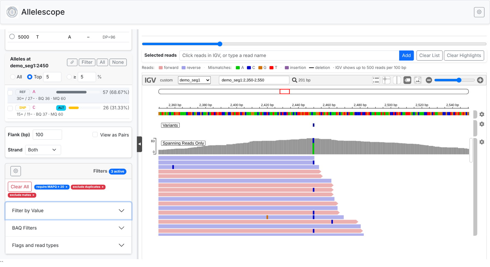
Each badge states the condition that is applied:
require …(blue): only reads with this property are shown. These come from properties set to require, from minimums (require MAPQ ≥ 20), from the Strand selector and from the allele filter.exclude …(red): reads with this property are hidden. These come from properties set to exclude (exclude duplicates) and from maximums (exclude soft clip > 5).view as pairsis shown too, although it changes only how reads are drawn.
11.7 Reset, download and presets
Open the gear on the Filters card:
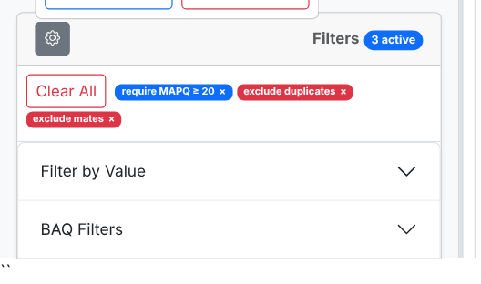
- Reset filters returns every filter to its default and clears the allele filter.
- Download settings (.json) saves the current filter settings as a file.
- To save the current settings as a preset, type a name and click Save Current.
- To load a preset, choose it in the list and click Load. Delete removes it; a message offers Undo.
Presets are stored by your web browser on your computer. They are not shared with other people or other browsers. Presets saved with an earlier version are converted when you load them. The allele filter is not part of a preset.
12. Selecting, isolating and exporting reads
12.1 Select reads
Hold Shift and click a read in the alignment view. The read gets a green outline and its name is added to the Selected reads bar above the alignment view. You can also paste a read name into the box there and click Add or press Enter.
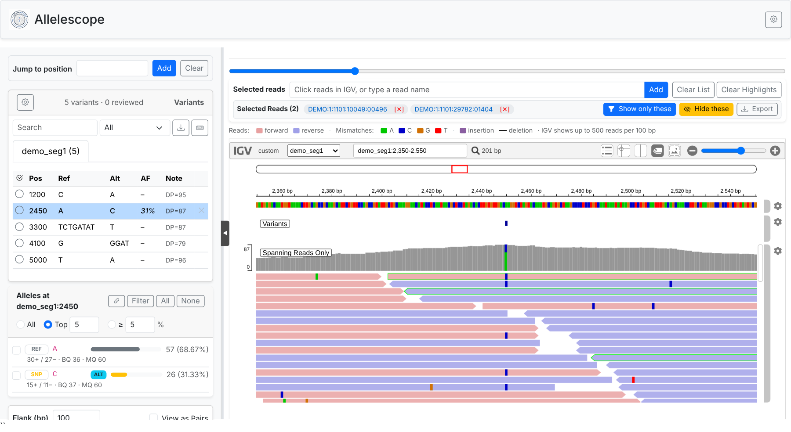
[✕] next to a name removes that read from the selection. Clear List empties the selection and restores the full read set; a message offers Undo.
12.2 Use the selection
| Button | Result |
|---|---|
| Show only these | Shows only the selected reads and their mates. |
| Hide these | Hides the selected reads and their mates. |
| Export | Downloads the selected reads as a BAM file. |
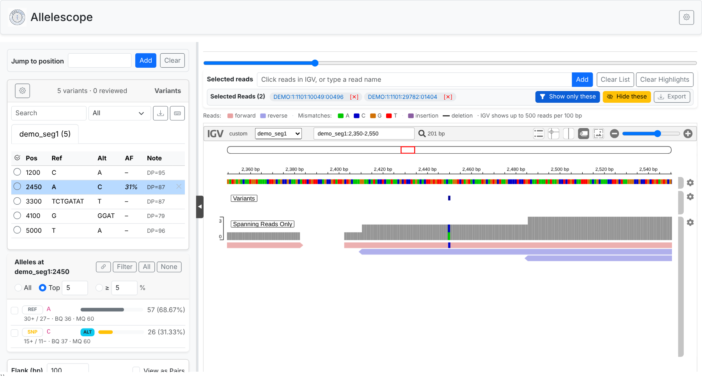
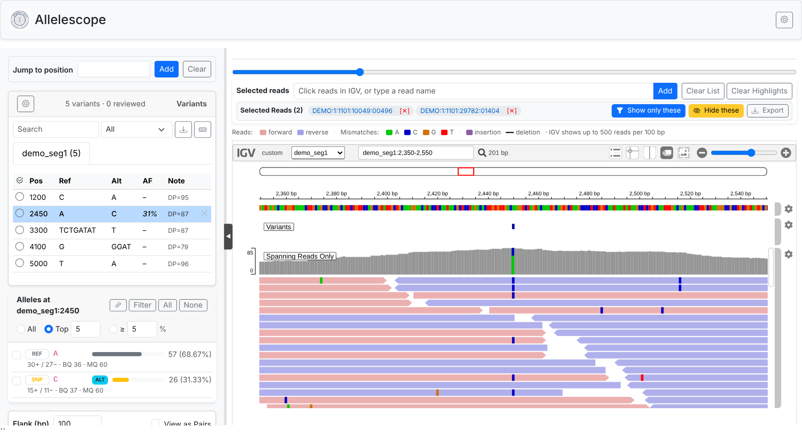
Selection works by read name, so a read and its mate always go together. Show only these and Hide these act on the selection as it stands when you click. If you change the selection afterwards, click the button again.
Both apply to the site you are viewing. When you select another site the full read set is shown again and a short message says so. Your selection is kept, so you can use it again there.
Export saves a file named selected_reads_<sequence>_<position>.bam for the site you are viewing. It opens in a new browser tab, so allow pop-ups for the page if nothing downloads. The file holds the selected reads that also pass the filters in force, so reset the filters first if you want every selected read. The file has no index; run samtools index on it before loading it elsewhere.
The Clear Highlights button does nothing in this version. Use Clear List.
13. Housekeeping: caches, saved lists and presets
13.1 The header gear
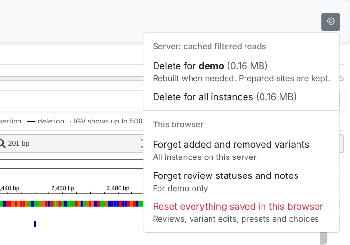
| Item | What it does |
|---|---|
| Server: cached filtered reads → Delete for instance | Deletes the filtered read sets kept for this instance (their size is shown). They are rebuilt when needed; prepared sites are kept. |
| Delete for all instances | The same for every instance on this server, after asking. This affects other people using the server. |
| This browser → Forget added and removed variants | Forgets your edits to the variant list in every instance on this server. A message offers Undo. |
| Forget review statuses and notes | Forgets the review of this instance only. A message offers Undo. |
| Reset everything saved in this browser | After asking, forgets everything Allelescope has saved in your browser (reviews of every instance, list edits, presets and choices) and reloads the page. This cannot be undone. |
Questions are asked in a box on the page; press Enter to confirm or Esc to cancel. Clearing a cache is always safe.
13.2 What your browser remembers
Some things are saved in your own web browser and reappear the next time you open the page from the same browser:
- review statuses and notes, for each instance;
- your edits to the variant list: positions you added and rows you removed;
- variant-list presets and filter presets;
- the subsampling choice for each deep site;
- the Sequence list layout, and whether the left pane is hidden.
The filter settings themselves are not restored when the page reloads; the address of a view keeps them (section 7.6).
Your browser stores the list edits, not the list. Each instance applies them to its own variants, so with several instances on one server:
- a position you added by hand appears in every instance that has that sequence;
- a row you removed is hidden in every instance that has a variant at the same sequence and position;
- apart from that, each instance shows its own calls.
13.3 Variant-list presets
The Variants gear (Figure 7) can keep several named variant lists, for example the sites still to be checked:
- Type a name and click Save Current to save the list as it is now, including manual rows and without removed rows.
- Choose a saved list and click Load to show that list. Loading replaces your current edits with the difference between the saved list and this instance's own variants; a message offers Undo.
- Delete removes the saved list; a message offers Undo.
Presets are stored in your browser and are offered in every instance on the server.
13.4 Where things are stored
| What | Where | How to remove it |
|---|---|---|
| Per-site read sets | <instance>/bam/ on the server |
Delete the folder. The cache items do not touch it. After an upgrade that changes the read tags or allele table, the server empties it once by itself. |
| Filtered read sets and exports | <data-dir>/cache/<instance>/ on the server |
Header gear → Delete for instance or Delete for all instances |
| Reviews, list edits, presets and choices | Your web browser | Header gear → the This browser items |
14. Known issues in this version
Each of these was observed with the version this manual covers.
| Area | What happens | What to do |
|---|---|---|
| Clear Highlights | The button does nothing. | Use Clear List. |
| Read names in the selection | Clicking a name does not move the view. | Find the read by its green outline. |
| Several manual positions | Entry stops at the first position that is already listed. | Enter the remaining positions again. |
| SNP labels | Shown as REF when the input BAM has no MD tags. |
Run samtools calmd before building. |
| Filters after a reload | Filters start empty when the page is reloaded. | Use presets, or keep the address of the view. |
15. Worked examples
The examples use the demo dataset (Appendix B), so you can repeat them.
15.1 Is the variant on both strands?
- Click the variant at
demo_seg1:5000. - Look at the allele panel: the ALT allele A reads
0+ / 13−and is marked ⚠ strand (Figure 25). - To see it in the reads, set Strand to Plus (+), then to Minus (-): the green A appears only with Minus (-) (Figure 41).
- Set Strand back to Both and press X to mark the variant as an artefact; press E to note why.
15.2 Does the support survive without duplicates?
- Click a variant.
- Open Flags and read types and set Duplicates and mates to exclude (Figure 42).
- The track now holds only non-duplicate reads that cross the site, and the list of filters in use shows
exclude duplicatesandexclude mates(Figure 43). Compare the allele balance in the coverage bar with what you saw before. - Click Clear All.
15.3 Which reads carry a deletion?
- Click the deletion at
demo_seg1:3300. - In the allele panel, click
DEL 7, the row markedALT(Figure 34), or press its number. - Shift-click any reads you want to keep a record of and click Export.
- Select the next variant. The allele filter is cleared for you.
15.4 Where does the rest of a split read map?
- Add position
3700ondemo_seg1. - Open Flags and read types and set split reads to require. The reads that remain all stop at the same base:
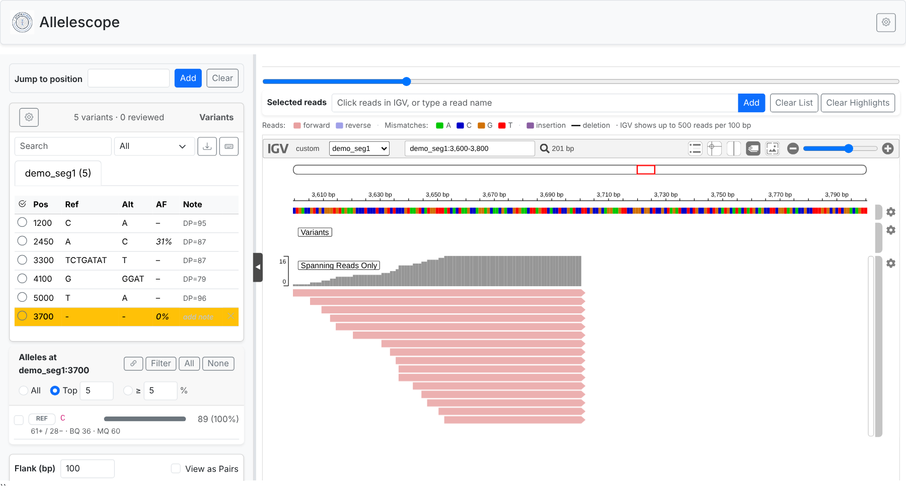
- The other parts of these reads are in the same track but on another sequence. Click a read: the details box lists its Supplementary Alignments, which give the other location. Type that region into the IGV position box, here
demo_seg2:700-1100:
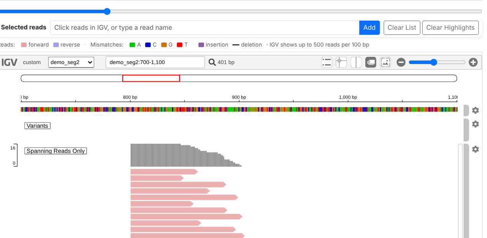
demo_seg2.- Set split reads back to any when you are done.
15.5 Are there pairs with an unusual orientation?
- Add position
5300ondemo_seg1. - Tick View as Pairs.
- In Flags and read types, set F1F2 under Pair orientation to require. Only pairs with both mates on the forward strand remain:
15.6 Review a whole list
- Press N to open the first variant without a status.
- Check the allele panel and the reads, and press C, D or X; press E to add a note.
- Press N again. Repeat until a message says every variant has a status. With a segmented genome, N moves on to the next segment by itself.
- Download the review as
.tsvor.vcf(section 7.5).
16. Troubleshooting
| Problem | Likely cause and fix |
|---|---|
| The page is unstyled and has no alignment view. | The browser cannot reach cdn.jsdelivr.net. Check the internet connection or firewall on the computer showing the page. |
| The read track is empty at a site that should have reads. | A filter is excluding every read. Check the filters in use and click Clear All. |
| A variant is missing from the list, or a yellow manual row appears that you did not add here. | Edits to the list are shared between instances (section 13.2). Header gear → Forget added and removed variants restores the full list. |
| "Could not read position. Is it beyond the end of the sequence?" | The position is beyond the end of the sequence or has no reads, or the wrong sequence tab was selected when you added it. |
| Your statuses and notes are gone. | They are kept per browser and per instance. Another browser, a private window or Reset everything saved in this browser starts empty. Download the review to keep it (section 7.5). |
| Keyboard shortcuts do nothing. | The cursor is in a box. Click an empty part of the page, or press Esc. |
| A site still shows old reads after the instance was rebuilt. | Delete <instance>/bam/ and clear the cache. |
| Export does nothing. | The download opens in a new tab. Allow pop-ups for the page. |
| The first click on a site is slow. | Expected. The reads for a site are prepared on the first visit; at very deep sites consider subsampling (section 10). |
build_variant_browser stops with 'samtools' not found in PATH. |
Install samtools, or activate the environment that has it. |
tabix fails during the build. |
The VCF is not sorted. Sort it with bcftools sort. |
| The build cannot work out a genome name. | Pass one with -g. |
| The page cannot be reached from your computer. | The server is on another machine. Set up the SSH tunnel in section 4.3. |
Appendix A: Reference tables
A.1 Tags Allelescope adds to reads
These appear in the read details box (Figure 11) and in exported BAM files.
| Tag | Meaning |
|---|---|
XO |
Classification of the read relative to the site, as a sum of the values in A.2 |
XA |
Allele the read shows at the site: R + base (reference), M + base (mismatch), D + length (deletion), I + inserted bases (insertion), . (site not covered). Mates carry the value of their partner. |
XR |
Pair orientation, for example F1R2 |
XI |
Net length of indels at the site (negative for deletions) |
XD |
Longest deletion at the site |
XN |
Longest insertion at the site |
XS |
Summary of indels at the site, for example D7 |
SL, SR |
Soft-clipped bases at the left and right end of the read |
NM, MD |
Edit distance and mismatch string, recalculated against the reference |
BQ |
Base alignment quality offsets added by samtools; the BAQ limits are worked out from it |
A.2 XO values
| Value | Hex | Name in the filter panel | Set when |
|---|---|---|---|
| 1 | 0x1 | overlap | The read crosses the site and both mates of its pair cross it |
| 2 | 0x2 | mates | The read was fetched as the mate of a crossing read |
| 4 | 0x4 | split mates | The read was fetched as the other part of a split read |
| 8 | 0x8 | split reads | The read has an SA tag |
| 16 | 0x10 | proper | Paired, flagged as a proper pair, and F1R2 or R1F2 |
| 32 | 0x20 | improper | Paired, and not "proper" as defined above |
| 4096 | 0x1000 | F1R2 | Read 1 forward, read 2 reverse |
| 8192 | 0x2000 | R1F2 | Read 1 reverse, read 2 forward |
| 16384 | 0x4000 | F1F2 | Both forward |
| 32768 | 0x8000 | R1R2 | Both reverse |
Examples: 4112 = 4096 + 16, an F1R2 proper pair. 8208 = 8192 + 16, an R1F2 proper pair. 16416 = 16384 + 32, a pair with both mates forward.
A.3 The address of a view
| Part | Meaning |
|---|---|
v=chrom:pos |
The variant shown |
on=… |
Flags and read types that are set, comma-separated: filter-… for require, retain-… for exclude, for example retain-duplicates |
min-mapq=20 and similar |
Numeric limits and the Strand setting, by the name of the box |
xa=MA |
Allele filter, using the XA codes in A.1 |
s=2000 |
Subsample size of a deep site |
pattern-mode=common and similar |
The read-pattern filter and thresholds, by the name of the box (section 9.5) |
pp=p4~4 |
The read pattern selected in the allele panel |
A.4 Columns of the review table (.tsv)
| Column | Meaning |
|---|---|
chrom, pos, ref, alt |
The variant |
vcf_info |
The VCF INFO summary shown in the table |
af, af_source |
Allele fraction, and vcf or reads for where it came from |
status, note |
Your review |
observed_alleles |
For sites opened in this session: each allele with its count, share and strand split, for example SNP:C=26(31.33%,15+/11-) |
read_flags |
For sites opened in this session: the read-evidence warnings, comma-separated, for example ambiguous,mismatches (section 9.3) |
effect, primers |
With a gene annotation or primer scheme: the effects (gene:change:kind) and the primers the variant lies in (section 9.4) |
A.5 Commands
build_variant_browser -b BAM -r FASTA [-v VCF] [-a GFF3|GTF] [-p PRIMERS_BED] [-g GENOME_NAME]
[-o OUT_DIR] [-t THREADS] [--bam-processing auto|full|skip] [--link]
start_server [--data-dir DIR] [--port PORT] [--host HOST] [--debug]
docker run --rm -p 127.0.0.1:8000:8000 [-v FOLDER:/data] allelescope [serve | demo | build ARGS]
Appendix B: The datasets used in the figures
All figures use small synthetic datasets, not real sequencing data, so nothing in them has biological meaning.
B.1 The demo dataset
Generated by demo/simulate_demo_data.py, which is supplied with this manual and is also in the repository's demo/ folder together with the finished files. The reference is random sequence and the reads are simulated 150 bp pairs.
| Sequence | Length | Contents |
|---|---|---|
demo_seg1 |
6,000 bp | All the variants below |
demo_seg2 |
3,000 bp | No variants; receives the other half of the split reads |
demo_seg3 |
1,500 bp | No variants |
Position on demo_seg1 |
In the VCF | What was simulated |
|---|---|---|
| 1200 | yes | SNP in nearly all reads |
| 2450 | yes | SNP in about 30% of read pairs |
| 2800 | no | Two low-frequency alternative bases |
| 3300 | yes | 7-base deletion in about 40% of read pairs |
| 3700 | no | Breakpoint: split reads continuing at demo_seg2:801 |
| 4100 | yes | 3-base insertion in about 25% of read pairs |
| 5000 | yes | SNP carried only by reverse-strand reads |
| 5150–5800 | no | A few pairs with both mates on the forward strand |
About 8% of read pairs are duplicated, and about 5% of reads have a soft-clipped end.
To recreate it (needs pysam, samtools, bgzip and tabix):
python demo/simulate_demo_data.py demo_input
samtools calmd -b demo_input/demo_reads.bam demo_input/demo_ref.fa > demo_input/demo_reads.md.bam
bgzip demo_input/demo_calls.vcf
build_variant_browser -b demo_input/demo_reads.md.bam -r demo_input/demo_ref.fa \
-v demo_input/demo_calls.vcf.gz -o Browsers/demo
start_server --data-dir Browsers --port 8000
Then open http://localhost:8000/demo/.
B.2 Datasets for sections 8, 9.3 to 9.5, and 10
| Dataset | Used in | Contents |
|---|---|---|
| 8-segment genome | Figures 18–20, 23, 24 | Eight random sequences of 0.9–2.4 kb named like influenza segments (seg1_PB2 … seg8_NS), about 30x paired reads, one or two SNPs per segment, AF in the VCF |
| 41-contig assembly | Figures 21, 22 | Forty contigs contig_01 … contig_40 and one with a 63-character assembler-style name, one SNP each |
| Deep viral-like sample | Figures 37, 38 | Two 30 kb sequences, 1.4 million reads, about 198,000 reads crossing one SNP at chr1:11501 |
| Read-evidence test set | Figures 26, 27 | One 6 kb sequence with seven SNPs at about 60x: one clean, and one each with ALT reads ending at the site, carrying extra mismatches and alternative hits, all in F1R2 pairs, all duplicates, clipped with long inserts, and one with AF 0.5 in the VCF but 10 % in the reads. Made by demo/simulate_artefacts.py; build it with --bam-processing skip so its duplicate marks are kept |
| Amplicon test set | Figures 28–30 | A 3 kb sequence with one gene on each strand, a GFF3 annotation, and 8 tiled 400 bp amplicons (primer BED, primers not trimmed), 50 read pairs of 2×250 bp each; nine variants: missense, synonymous, stop gained, frameshift, in-frame insertion, a missense change on the − strand, one in a primer and present in every molecule, one that exists only in one primer's sequence, and one outside the genes. Made by demo/simulate_amplicons.py; build it with -a genes.gff3 -p primers.bed --bam-processing skip |
| Read-pattern test set | Figures 31–33 | A 2 kb sequence; 546 read pairs of 2×150 bp around position 1000, 490 of which cross it: 300 reference, 130 of a lineage with three SNVs (930, 1000, 1110), 60 of a lineage with two (1000, 1060), 30 artefact pairs with SNVs at 1000 and 1005 only at the end of reverse reads, 14 of the second lineage from a contaminant with 12 scattered mismatches and mapping quality 25, 12 PCR chimeras of the two lineages, and sequencing errors at 0.2 % per base. Made by demo/simulate_patterns.py; build it with --bam-processing skip |